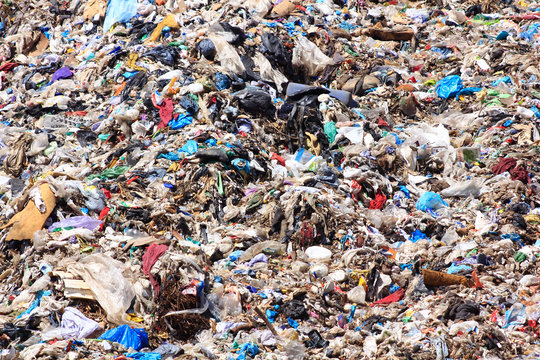
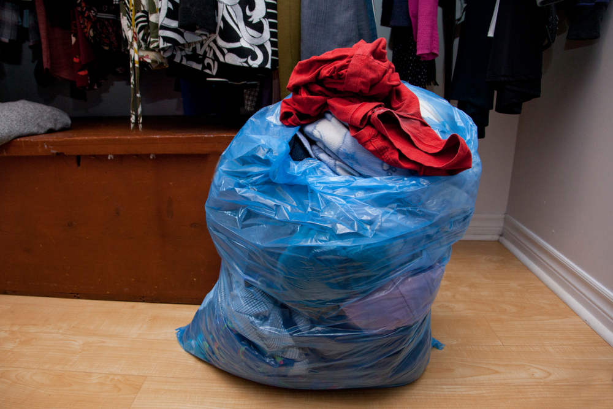
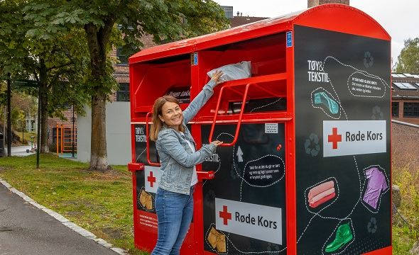

Hvordan blir natur og miljø påvirket av forbruk?
Kles Industrien er en av de mes forurensene i verden. Normenn kjøper dobbelt så mye kler siden 1990. Det produseres mest billige klær med lav kvalitet. Så mye som 30% av alle klærne produsert har havnet i søppelen. Det kan være på grun av den lave kvaliteten.
Hvordan blir DU påvirket av eget og andres forbruk?
359 klesbutikker betaler ikke levelønn til arbeidere. 2/3 nye kler er laget av plast fibre. Fattige land det klør blir produsert fører til utslipp av milijøgiftige kemikaler og mokroplast.

Hva påvirker ens forbruk og hvordan?
Har du små klær som ikke passer deg lenger kan det hende at du ikke tenker på og gi den til noen andre eller donere den. En person kaster 600 klesplagg igjennom livet.
Hvilke tiltak gjøres for å endre og forbedre samfunnets forbruk?
Det er kontainere plassert rundt landet der du kan legge klesplagg oppi for å donere dem til folk som trenger dem. Det er også plasser du kan gi dem til så bruker de metrialene omigjen.
